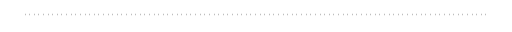
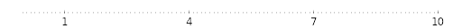
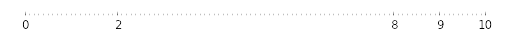
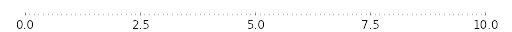
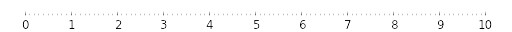
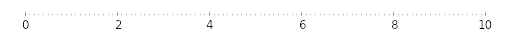
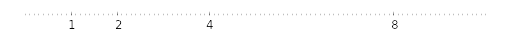
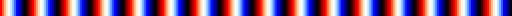
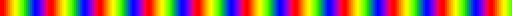

Matplotlib tutorial
Nicolas P. Rougier
Table of Contents
Sources are available from github
All code and material is licensed under a Creative Commons Attribution-ShareAlike 4.0.
You can test your installation before the tutorial using the check-installation.py script.
Tutorial can be read at http://www.labri.fr/perso/nrougier/teaching/matplotlib/matplotlib.html
See also:
Introduction
matplotlib is probably the single most used Python package for 2D-graphics. It provides both a very quick way to visualize data from Python and publication-quality figures in many formats. We are going to explore matplotlib in interactive mode covering most common cases.
IPython and the pylab mode
IPython is an enhanced interactive Python shell that has lots of interesting features including named inputs and outputs, access to shell commands, improved debugging and many more. When we start it with the command line argument -pylab (--pylab since IPython version 0.12), it allows interactive matplotlib sessions that have Matlab/Mathematica-like functionality.
pyplot
pyplot provides a convenient interface to the matplotlib object-oriented plotting library. It is modeled closely after Matlab(TM). Therefore, the majority of plotting commands in pyplot have Matlab(TM) analogs with similar arguments. Important commands are explained with interactive examples.
Simple plot
In this section, we want to draw the cosine and sine functions on the same plot. Starting from the default settings, we'll enrich the figure step by step to make it nicer.
First step is to get the data for the sine and cosine functions:
import numpy as np X = np.linspace(-np.pi, np.pi, 256,endpoint=True) C,S = np.cos(X), np.sin(X)
X is now a numpy array with 256 values ranging from -π to +π (included). C is the cosine (256 values) and S is the sine (256 values).
To run the example, you can download each of the examples and run it using:
$ python exercice_1.py
You can get source for each step by clicking on the corresponding figure.
Using defaults
Documentation

Matplotlib comes with a set of default settings that allow customizing all kinds of properties. You can control the defaults of almost every property in matplotlib: figure size and dpi, line width, color and style, axes, axis and grid properties, text and font properties and so on. While matplotlib defaults are rather good in most cases, you may want to modify some properties for specific cases.
import numpy as np import matplotlib.pyplot as plt X = np.linspace(-np.pi, np.pi, 256, endpoint=True) C,S = np.cos(X), np.sin(X) plt.plot(X,C) plt.plot(X,S) plt.show()
Instantiating defaults
Documentation

In the script below, we've instantiated (and commented) all the figure settings that influence the appearance of the plot. The settings have been explicitly set to their default values, but now you can interactively play with the values to explore their affect (see Line properties and Line styles below).
# Imports import numpy as np import matplotlib.pyplot as plt # Create a new figure of size 8x6 points, using 100 dots per inch plt.figure(figsize=(8,6), dpi=80) # Create a new subplot from a grid of 1x1 plt.subplot(111) X = np.linspace(-np.pi, np.pi, 256,endpoint=True) C,S = np.cos(X), np.sin(X) # Plot cosine using blue color with a continuous line of width 1 (pixels) plt.plot(X, C, color="blue", linewidth=1.0, linestyle="-") # Plot sine using green color with a continuous line of width 1 (pixels) plt.plot(X, S, color="green", linewidth=1.0, linestyle="-") # Set x limits plt.xlim(-4.0,4.0) # Set x ticks plt.xticks(np.linspace(-4,4,9,endpoint=True)) # Set y limits plt.ylim(-1.0,1.0) # Set y ticks plt.yticks(np.linspace(-1,1,5,endpoint=True)) # Save figure using 72 dots per inch # savefig("../figures/exercice_2.png",dpi=72) # Show result on screen plt.show()
Changing colors and line widths
Documentation

First step, we want to have the cosine in blue and the sine in red and a slightly thicker line for both of them. We'll also slightly alter the figure size to make it more horizontal.
... plt.figure(figsize=(10,6), dpi=80) plt.plot(X, C, color="blue", linewidth=2.5, linestyle="-") plt.plot(X, S, color="red", linewidth=2.5, linestyle="-") ...
Setting limits
Documentation

Current limits of the figure are a bit too tight and we want to make some space in order to clearly see all data points.
... plt.xlim(X.min()*1.1, X.max()*1.1) plt.ylim(C.min()*1.1, C.max()*1.1) ...
Setting ticks

Current ticks are not ideal because they do not show the interesting values (+/-π,+/-π/2) for sine and cosine. We'll change them such that they show only these values.
... plt.xticks( [-np.pi, -np.pi/2, 0, np.pi/2, np.pi]) plt.yticks([-1, 0, +1]) ...
Setting tick labels
Documentation

Ticks are now properly placed but their label is not very explicit. We could guess that 3.142 is π but it would be better to make it explicit. When we set tick values, we can also provide a corresponding label in the second argument list. Note that we'll use latex to allow for nice rendering of the label.
...
plt.xticks([-np.pi, -np.pi/2, 0, np.pi/2, np.pi],
[r'$-\pi$', r'$-\pi/2$', r'$0$', r'$+\pi/2$', r'$+\pi$'])
plt.yticks([-1, 0, +1],
[r'$-1$', r'$0$', r'$+1$'])
...
Moving spines
Documentation

Spines are the lines connecting the axis tick marks and noting the boundaries of the data area. They can be placed at arbitrary positions and until now, they were on the border of the axis. We'll change that since we want to have them in the middle. Since there are four of them (top/bottom/left/right), we'll discard the top and right by setting their color to none and we'll move the bottom and left ones to coordinate 0 in data space coordinates.
...
ax = plt.gca()
ax.spines['right'].set_color('none')
ax.spines['top'].set_color('none')
ax.xaxis.set_ticks_position('bottom')
ax.spines['bottom'].set_position(('data',0))
ax.yaxis.set_ticks_position('left')
ax.spines['left'].set_position(('data',0))
...
Adding a legend
Documentation

Let's add a legend in the upper left corner. This only requires adding the keyword argument label (that will be used in the legend box) to the plot commands.
... plt.plot(X, C, color="blue", linewidth=2.5, linestyle="-", label="cosine") plt.plot(X, S, color="red", linewidth=2.5, linestyle="-", label="sine") plt.legend(loc='upper left', frameon=False) ...
Annotate some points
Documentation

Let's annotate some interesting points using the annotate command. We chose the 2π/3 value and we want to annotate both the sine and the cosine. We'll first draw a marker on the curve as well as a straight dotted line. Then, we'll use the annotate command to display some text with an arrow.
...
t = 2*np.pi/3
plt.plot([t,t],[0,np.cos(t)], color ='blue', linewidth=1.5, linestyle="--")
plt.scatter([t,],[np.cos(t),], 50, color ='blue')
plt.annotate(r'$\sin(\frac{2\pi}{3})=\frac{\sqrt{3}}{2}$',
xy=(t, np.sin(t)), xycoords='data',
xytext=(+10, +30), textcoords='offset points', fontsize=16,
arrowprops=dict(arrowstyle="->", connectionstyle="arc3,rad=.2"))
plt.plot([t,t],[0,np.sin(t)], color ='red', linewidth=1.5, linestyle="--")
plt.scatter([t,],[np.sin(t),], 50, color ='red')
plt.annotate(r'$\cos(\frac{2\pi}{3})=-\frac{1}{2}$',
xy=(t, np.cos(t)), xycoords='data',
xytext=(-90, -50), textcoords='offset points', fontsize=16,
arrowprops=dict(arrowstyle="->", connectionstyle="arc3,rad=.2"))
...
Devil is in the details

The tick labels are now hardly visible because of the blue and red lines. We can make them bigger and we can also adjust their properties such that they'll be rendered on a semi-transparent white background. This will allow us to see both the data and the labels.
...
for label in ax.get_xticklabels() + ax.get_yticklabels():
label.set_fontsize(16)
label.set_bbox(dict(facecolor='white', edgecolor='None', alpha=0.65 ))
...
Figures, Subplots, Axes and Ticks
So far we have used implicit figure and axes creation. This is handy for fast plots. We can have more control over the display using figure, subplot, and axes explicitly. A figure in matplotlib means the whole window in the user interface. Within this figure there can be subplots. While subplot positions the plots in a regular grid, axes allows free placement within the figure. Both can be useful depending on your intention. We've already worked with figures and subplots without explicitly calling them. When we call plot, matplotlib calls gca() to get the current axes and gca in turn calls gcf() to get the current figure. If there is none it calls figure() to make one, strictly speaking, to make a subplot(111). Let's look at the details.
Figures
A figure is the windows in the GUI that has "Figure #" as title. Figures are numbered starting from 1 as opposed to the normal Python way starting from 0. This is clearly MATLAB-style. There are several parameters that determine what the figure looks like:
| Argument | Default | Description |
|---|---|---|
| num | 1 | number of figure |
| figsize | figure.figsize | figure size in in inches (width, height) |
| dpi | figure.dpi | resolution in dots per inch |
| facecolor | figure.facecolor | color of the drawing background |
| edgecolor | figure.edgecolor | color of edge around the drawing background |
| frameon | True | draw figure frame or not |
The defaults can be specified in the resource file and will be used most of the time. Only the number of the figure is frequently changed.
When you work with the GUI you can close a figure by clicking on the x in the upper right corner. But you can close a figure programmatically by calling close. Depending on the argument it closes (1) the current figure (no argument), (2) a specific figure (figure number or figure instance as argument), or (3) all figures (all as argument).
As with other objects, you can set figure properties with the set_something methods.
Subplots
With subplot you can arrange plots in a regular grid. You need to specify the number of rows and columns and the number of the plot. Note that the gridspec command is a more powerful alternative.


Axes
Axes are very similar to subplots but allow placement of plots at any location in the figure. So if we want to put a smaller plot inside a bigger one we do so with axes.


Ticks
Well formatted ticks are an important part of publishing-ready figures. Matplotlib provides a totally configurable system for ticks. There are tick locators to specify where ticks should appear and tick formatters to give ticks the appearance you want. Major and minor ticks can be located and formatted independently from each other. Per default minor ticks are not shown, i.e. there is only an empty list for them because it is as NullLocator (see below).
Tick Locators
There are several locators for different kind of requirements:
| Class | Description |
|---|---|
| NullLocator | No ticks.  |
| IndexLocator | Place a tick on every multiple of some base number of points plotted.  |
| FixedLocator | Tick locations are fixed.  |
| LinearLocator | Determine the tick locations.  |
| MultipleLocator | Set a tick on every integer that is multiple of some base.  |
| AutoLocator | Select no more than n intervals at nice locations.  |
| LogLocator | Determine the tick locations for log axes.  |
All of these locators derive from the base class matplotlib.ticker.Locator. You can make your own locator deriving from it. Handling dates as ticks can be especially tricky. Therefore, matplotlib provides special locators in matplotlib.dates.
Animation
For quite a long time, animation in matplotlib was not an easy task and was done mainly through clever hacks. However, things have started to change since version 1.1 and the introduction of tools for creating animation very intuitively, with the possibility to save them in all kind of formats (but don't expect to be able to run very complex animation at 60 fps though).
Documentation
- See Animation
The most easy way to make an animation in matplotlib is to declare a FuncAnimation object that specifies to matplotlib what is the figure to update, what is the update function and what is the delay between frames.
Drip drop
A very simple rain effect can be obtained by having small growing rings randomly positioned over a figure. Of course, they won't grow forever since the wave is supposed to damp with time. To simulate that, we can use a more and more transparent color as the ring is growing, up to the point where it is no more visible. At this point, we remove the ring and create a new one.
First step is to create a blank figure:
# New figure with white background fig = plt.figure(figsize=(6,6), facecolor='white') # New axis over the whole figure, no frame and a 1:1 aspect ratio ax = fig.add_axes([0,0,1,1], frameon=False, aspect=1)
Next, we need to create several rings. For this, we can use the scatter plot object that is generally used to visualize points cloud, but we can also use it to draw rings by specifying we don't have a facecolor. We have also to take care of initial size and color for each ring such that we have all size between a minimum and a maximum size and also to make sure the largest ring is almost transparent.

# Number of ring n = 50 size_min = 50 size_max = 50*50 # Ring position P = np.random.uniform(0,1,(n,2)) # Ring colors C = np.ones((n,4)) * (0,0,0,1) # Alpha color channel goes from 0 (transparent) to 1 (opaque) C[:,3] = np.linspace(0,1,n) # Ring sizes S = np.linspace(size_min, size_max, n) # Scatter plot scat = ax.scatter(P[:,0], P[:,1], s=S, lw = 0.5, edgecolors = C, facecolors='None') # Ensure limits are [0,1] and remove ticks ax.set_xlim(0,1), ax.set_xticks([]) ax.set_ylim(0,1), ax.set_yticks([])
Now, we need to write the update function for our animation. We know that at each time step each ring should grow be more transparent while largest ring should be totally transparent and thus removed. Of course, we won't actually remove the largest ring but re-use it to set a new ring at a new random position, with nominal size and color. Hence, we keep the number of ring constant.

def update(frame): global P, C, S # Every ring is made more transparent C[:,3] = np.maximum(0, C[:,3] - 1.0/n) # Each ring is made larger S += (size_max - size_min) / n # Reset ring specific ring (relative to frame number) i = frame % 50 P[i] = np.random.uniform(0,1,2) S[i] = size_min C[i,3] = 1 # Update scatter object scat.set_edgecolors(C) scat.set_sizes(S) scat.set_offsets(P) # Return the modified object return scat,
Last step is to tell matplotlib to use this function as an update function for the animation and display the result or save it as a movie:
animation = FuncAnimation(fig, update, interval=10, blit=True, frames=200) # animation.save('rain.gif', writer='imagemagick', fps=30, dpi=40) plt.show()
Earthquakes
We'll now use the rain animation to visualize earthquakes on the planet from the last 30 days. The USGS Earthquake Hazards Program is part of the National Earthquake Hazards Reduction Program (NEHRP) and provides several data on their website. Those data are sorted according to earthquakes magnitude, ranging from significant only down to all earthquakes, major or minor. You would be surprised by the number of minor earthquakes happening every hour on the planet. Since this would represent too much data for us, we'll stick to earthquakes with magnitude > 4.5. At the time of writing, this already represent more than 300 earthquakes in the last 30 days.
First step is to read and convert data. We'll use the urllib library that allows to open and read remote data. Data on the website use the CSV format whose content is given by the first line:
time,latitude,longitude,depth,mag,magType,nst,gap,dmin,rms,net,id,updated,place,type 2015-08-17T13:49:17.320Z,37.8365,-122.2321667,4.82,4.01,mw,... 2015-08-15T07:47:06.640Z,-10.9045,163.8766,6.35,6.6,mwp,...
We are only interested in latitude, longitude and magnitude and we won't parse time of event (ok, that's bad, feel free to send me a PR).
import urllib from mpl_toolkits.basemap import Basemap # -> http://earthquake.usgs.gov/earthquakes/feed/v1.0/csv.php feed = "http://earthquake.usgs.gov/earthquakes/feed/v1.0/summary/" # Significant earthquakes in the last 30 days # url = urllib.request.urlopen(feed + "significant_month.csv") # Magnitude > 4.5 url = urllib.request.urlopen(feed + "4.5_month.csv") # Magnitude > 2.5 # url = urllib.request.urlopen(feed + "2.5_month.csv") # Magnitude > 1.0 # url = urllib.request.urlopen(feed + "1.0_month.csv") # Reading and storage of data data = url.read() data = data.split(b'\n')[+1:-1] E = np.zeros(len(data), dtype=[('position', float, 2), ('magnitude', float, 1)]) for i in range(len(data)): row = data[i].split(',') E['position'][i] = float(row[2]),float(row[1]) E['magnitude'][i] = float(row[4])
Now, we need to draw earth on a figure to show precisely where the earthquake center is and to translate latitude/longitude in some coordinates matplotlib can handle. Fortunately, there is the basemap project (that tends to be replaced by the more complete cartopy) that is really simple to install and to use. First step is to define a projection to draw the earth onto a screen (there exists many different projections) and we'll stick to the mill projection which is rather standard for non-specialist like me.
fig = plt.figure(figsize=(14,10)) ax = plt.subplot(1,1,1) earth = Basemap(projection='mill')
Next, we request to draw coastline and fill continents:
earth.drawcoastlines(color='0.50', linewidth=0.25) earth.fillcontinents(color='0.95')
The earth object will also be used to translate coordinate quite automatically. We are almost finished. Last step is to adapt the rain code and put some eye candy:
P = np.zeros(50, dtype=[('position', float, 2), ('size', float, 1), ('growth', float, 1), ('color', float, 4)]) scat = ax.scatter(P['position'][:,0], P['position'][:,1], P['size'], lw=0.5, edgecolors = P['color'], facecolors='None', zorder=10) def update(frame): current = frame % len(E) i = frame % len(P) P['color'][:,3] = np.maximum(0, P['color'][:,3] - 1.0/len(P)) P['size'] += P['growth'] magnitude = E['magnitude'][current] P['position'][i] = earth(*E['position'][current]) P['size'][i] = 5 P['growth'][i]= np.exp(magnitude) * 0.1 if magnitude < 6: P['color'][i] = 0,0,1,1 else: P['color'][i] = 1,0,0,1 scat.set_edgecolors(P['color']) scat.set_facecolors(P['color']*(1,1,1,0.25)) scat.set_sizes(P['size']) scat.set_offsets(P['position']) return scat, animation = FuncAnimation(fig, update, interval=10) plt.show()
If everything went well, you should obtain something like this (with animation):

Other Types of Plots


Regular Plots

Hints
You need to use the fill_between command.
Starting from the code below, try to reproduce the graphic on the right taking care of filled areas:
import numpy as np import matplotlib.pyplot as plt n = 256 X = np.linspace(-np.pi,np.pi,n,endpoint=True) Y = np.sin(2*X) plt.plot (X, Y+1, color='blue', alpha=1.00) plt.plot (X, Y-1, color='blue', alpha=1.00) plt.show()
Click on figure for solution.
Scatter Plots

Hints
Color is given by angle of (X,Y).
Starting from the code below, try to reproduce the graphic on the right taking care of marker size, color and transparency.
import numpy as np import matplotlib.pyplot as plt n = 1024 X = np.random.normal(0,1,n) Y = np.random.normal(0,1,n) plt.scatter(X,Y) plt.show()
Click on figure for solution.
Bar Plots

Hints
You need to take care of text alignment.
Starting from the code below, try to reproduce the graphic on the right by adding labels for red bars.
import numpy as np
import matplotlib.pyplot as plt
n = 12
X = np.arange(n)
Y1 = (1-X/float(n)) * np.random.uniform(0.5,1.0,n)
Y2 = (1-X/float(n)) * np.random.uniform(0.5,1.0,n)
plt.bar(X, +Y1, facecolor='#9999ff', edgecolor='white')
plt.bar(X, -Y2, facecolor='#ff9999', edgecolor='white')
for x,y in zip(X,Y1):
plt.text(x+0.4, y+0.05, '%.2f' % y, ha='center', va= 'bottom')
plt.ylim(-1.25,+1.25)
plt.show()
Click on figure for solution.
Contour Plots

Hints
You need to use the clabel command.
Starting from the code below, try to reproduce the graphic on the right taking care of the colormap (see Colormaps below).
import numpy as np import matplotlib.pyplot as plt def f(x,y): return (1-x/2+x**5+y**3)*np.exp(-x**2-y**2) n = 256 x = np.linspace(-3,3,n) y = np.linspace(-3,3,n) X,Y = np.meshgrid(x,y) plt.contourf(X, Y, f(X,Y), 8, alpha=.75, cmap='jet') C = plt.contour(X, Y, f(X,Y), 8, colors='black', linewidth=.5) plt.show()
Click on figure for solution.
Imshow

Hints
You need to take care of the origin of the image in the imshow command and use a colorbar
Starting from the code below, try to reproduce the graphic on the right taking care of colormap, image interpolation and origin.
import numpy as np import matplotlib.pyplot as plt def f(x,y): return (1-x/2+x**5+y**3)*np.exp(-x**2-y**2) n = 10 x = np.linspace(-3,3,4*n) y = np.linspace(-3,3,3*n) X,Y = np.meshgrid(x,y) plt.imshow(f(X,Y)) plt.show()
Click on figure for solution.
Pie Charts

Hints
You need to modify Z.
Starting from the code below, try to reproduce the graphic on the right taking care of colors and slices size.
import numpy as np import matplotlib.pyplot as plt n = 20 Z = np.random.uniform(0,1,n) plt.pie(Z) plt.show()
Click on figure for solution.
Quiver Plots

Hints
You need to draw arrows twice.
Starting from the code above, try to reproduce the graphic on the right taking care of colors and orientations.
import numpy as np import matplotlib.pyplot as plt n = 8 X,Y = np.mgrid[0:n,0:n] plt.quiver(X,Y) plt.show()
Click on figure for solution.
Grids

Starting from the code below, try to reproduce the graphic on the right taking care of line styles.
import numpy as np import matplotlib.pyplot as plt axes = gca() axes.set_xlim(0,4) axes.set_ylim(0,3) axes.set_xticklabels([]) axes.set_yticklabels([]) plt.show()
Click on figure for solution.
Multi Plots

Hints
You can use several subplots with different partition.
Starting from the code below, try to reproduce the graphic on the right.
import numpy as np import matplotlib.pyplot as plt plt.subplot(2,2,1) plt.subplot(2,2,3) plt.subplot(2,2,4) plt.show()
Click on figure for solution.
Polar Axis

Hints
You only need to modify the axes line
Starting from the code below, try to reproduce the graphic on the right.
import numpy as np
import matplotlib.pyplot as plt
plt.axes([0,0,1,1])
N = 20
theta = np.arange(0.0, 2*np.pi, 2*np.pi/N)
radii = 10*np.random.rand(N)
width = np.pi/4*np.random.rand(N)
bars = plt.bar(theta, radii, width=width, bottom=0.0)
for r,bar in zip(radii, bars):
bar.set_facecolor( cm.jet(r/10.))
bar.set_alpha(0.5)
plt.show()
Click on figure for solution.
3D Plots

Hints
You need to use contourf
Starting from the code below, try to reproduce the graphic on the right.
import numpy as np import matplotlib.pyplot as plt from mpl_toolkits.mplot3d import Axes3D fig = plt.figure() ax = Axes3D(fig) X = np.arange(-4, 4, 0.25) Y = np.arange(-4, 4, 0.25) X, Y = np.meshgrid(X, Y) R = np.sqrt(X**2 + Y**2) Z = np.sin(R) ax.plot_surface(X, Y, Z, rstride=1, cstride=1, cmap='hot') plt.show()
Click on figure for solution.
Text

Hints
Have a look at the matplotlib logo.
Try to do the same from scratch !
Click on figure for solution.
Beyond this tutorial
Matplotlib benefits from extensive documentation as well as a large community of users and developpers. Here are some links of interest:
Tutorials
- Pyplot tutorial
- Introduction
- Controlling line properties
- Working with multiple figures and axes
- Working with text
- Image tutorial
- Startup commands
- Importing image data into Numpy arrays
- Plotting numpy arrays as images
- Text tutorial
- Text introduction
- Basic text commands
- Text properties and layout
- Writing mathematical expressions
- Text rendering With LaTeX
- Annotating text
- Artist tutorial
- Introduction
- Customizing your objects
- Object containers
- Figure container
- Axes container
- Axis containers
- Tick containers
- Path tutorial
- Introduction
- Bézier example
- Compound paths
- Transforms tutorial
- Introduction
- Data coordinates
- Axes coordinates
- Blended transformations
- Using offset transforms to create a shadow effect
- The transformation pipeline
Matplotlib documentation
- User guide
- FAQ
- Installation
- Usage
- How-To
- Troubleshooting
- Environment Variables
- Screenshots
Code documentation
The code is fairly well documented and you can quickly access a specific command from within a python session:
>>> from pylab import *
>>> help(plot)
Help on function plot in module matplotlib.pyplot:
plot(*args, **kwargs)
Plot lines and/or markers to the
:class:`~matplotlib.axes.Axes`. *args* is a variable length
argument, allowing for multiple *x*, *y* pairs with an
optional format string. For example, each of the following is
legal::
plot(x, y) # plot x and y using default line style and color
plot(x, y, 'bo') # plot x and y using blue circle markers
plot(y) # plot y using x as index array 0..N-1
plot(y, 'r+') # ditto, but with red plusses
If *x* and/or *y* is 2-dimensional, then the corresponding columns
will be plotted.
...
Galleries
The matplotlib gallery is also incredibly useful when you search how to render a given graphic. Each example comes with its source.
A smaller gallery is also available here.
Mailing lists
Finally, there is a user mailing list where you can ask for help and a developers mailing list that is more technical.
Quick references
Here is a set of tables that show main properties and styles.
Line properties
| Property | Description | Appearance |
|---|---|---|
| alpha (or a) | alpha transparency on 0-1 scale | |
| antialiased | True or False - use antialised rendering |

|
| color (or c) | matplotlib color arg | |
| linestyle (or ls) | see Line properties | |
| linewidth (or lw) | float, the line width in points | |
| solid_capstyle | Cap style for solid lines | |
| solid_joinstyle | Join style for solid lines | |
| dash_capstyle | Cap style for dashes | |
| dash_joinstyle | Join style for dashes | |
| marker | see Markers | |
| markeredgewidth (mew) | line width around the marker symbol | |
| markeredgecolor (mec) | edge color if a marker is used | 
|
| markerfacecolor (mfc) | face color if a marker is used | |
| markersize (ms) | size of the marker in points |
Line styles
| Symbol | Description | Appearance |
|---|---|---|
| - | solid line | |
| -- | dashed line | |
| -. | dash-dot line | |
| : | dotted line | 
|
| . | points | |
| , | pixels | |
| o | circle | |
| ^ | triangle up | |
| v | triangle down | |
| < | triangle left | 
|
| > | triangle right | 
|
| s | square | |
| + | plus | |
| x | cross | 
|
| D | diamond | |
| d | thin diamond | |
| 1 | tripod down | |
| 2 | tripod up | |
| 3 | tripod left | |
| 4 | tripod right | |
| h | hexagon | 
|
| H | rotated hexagon | |
| p | pentagon | |
| | | vertical line | |
| _ | horizontal line |
Markers
| Symbol | Description | Appearance |
|---|---|---|
| 0 | tick left | |
| 1 | tick right | 
|
| 2 | tick up | |
| 3 | tick down | |
| 4 | caret left | |
| 5 | caret right | |
| 6 | caret up | |
| 7 | caret down | |
| o | circle | |
| D | diamond | |
| h | hexagon 1 | |
| H | hexagon 2 | 
|
| _ | horizontal line | |
| 1 | tripod down | |
| 2 | tripod up | |
| 3 | tripod left | |
| 4 | tripod right | |
| 8 | octagon | |
| p | pentagon | |
| ^ | triangle up | |
| v | triangle down | |
| < | triangle left | 
|
| > | triangle right | 
|
| d | thin diamond | |
| , | pixel | |
| + | plus | |
| . | point | |
| s | square | |
| * | star | |
| | | vertical line | |
| x | cross | 
|
| r'$\sqrt{2}$' | any latex expression |
Colormaps
All colormaps can be reversed by appending _r. For instance, gray_r is the reverse of gray.
If you want to know more about colormaps, checks Documenting the matplotlib colormaps.
Base
| Name | Appearance |
|---|---|
| autumn | |
| bone | 
|
| cool | |
| copper | |
| flag |  |
| gray | |
| hot | |
| hsv | |
| jet | |
| pink | |
| prism |  |
| spectral | |
| spring | |
| summer | |
| winter |
GIST
| Name | Appearance |
|---|---|
| gist_earth | |
| gist_gray | 
|
| gist_heat | |
| gist_ncar | |
| gist_rainbow | |
| gist_stern | |
| gist_yarg |
Sequential
| Name | Appearance |
|---|---|
| BrBG | |
| PiYG | |
| PRGn | |
| PuOr | |
| RdBu | |
| RdGy | |
| RdYlBu | |
| RdYlGn | |
| Spectral |
Diverging
| Name | Appearance |
|---|---|
| Blues | |
| BuGn | |
| BuPu | |
| GnBu | |
| Greens | 
|
| Greys | 
|
| Oranges | |
| OrRd | |
| PuBu | |
| PuBuGn | |
| PuRd | |
| Purples | |
| RdPu | |
| Reds | |
| YlGn | |
| YlGnBu | |
| YlOrBr | |
| YlOrRd |
Qualitative
| Name | Appearance |
|---|---|
| Accent | |
| Dark2 | |
| Paired | |
| Pastel1 | 
|
| Pastel2 | |
| Set1 | |
| Set2 | |
| Set3 |
Miscellaneous
| Name | Appearance |
|---|---|
| afmhot | |
| binary | 
|
| brg | |
| bwr | |
| coolwarm | |
| CMRmap | |
| cubehelix | |
| gnuplot | |
| gnuplot2 | |
| ocean | 
|
| rainbow | |
| seismic | |
| terrain |